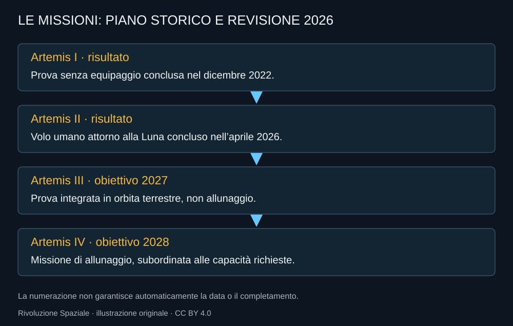

Una delle correzioni più importanti da fare quando si legge Artemis nel 2026 riguarda il numero tre. Per anni Artemis III è stata presentata come la missione del ritorno sulla superficie. Nel piano aggiornato, il numero resta ma cambia il lavoro: una prova integrata in orbita terrestre, prevista nel 2027.
Che cosa viene messo alla prova
Orion deve incontrare un sistema commerciale di allunaggio e verificare operazioni come rendezvous e docking. NASA descrive la possibilità di lavorare con uno o entrambi i fornitori, SpaceX e Blue Origin. Questa possibilità non è una conferma che entrambi saranno pronti nello stesso momento.
Il test cerca un’esperienza integrata prima della missione sulla Luna. Se apparati di due veicoli funzionano separatamente, resta da sapere come lavorino insieme. La compatibilità deve essere verificata nella navigazione, nel collegamento e nelle procedure, non soltanto nella forma delle flange.

Perché non provarlo direttamente vicino alla Luna
La distanza modifica le possibilità di risposta. Una prova terrestre consente di concentrarsi su interfacce e operazioni prima di aggiungere discesa, permanenza sul terreno e risalita. Non rende nullo il rischio; rende più circoscritta la domanda della missione.
Il richiamo concettuale a una prova integrata prima dell’allunaggio è comprensibile, ma non deve trasformarsi in un confronto letterale con Apollo. Veicoli, campagne preparatorie e requisiti sono diversi. Il valore del test deriva dal problema che verifica oggi.
Una revisione non è già una soluzione
Inserire una missione di prova crea un’occasione per scoprire problemi e correggerli. Richiede però hardware, personale e tempo. Se i sistemi che dovrebbe incontrare non sono disponibili, il nuovo numero sul calendario non li rende pronti.
La qualità della scelta dipenderà da quanto il test riesca a ritirare rischi della missione successiva. Un obiettivo utile deve avere criteri di accettazione: che cosa significa aver dimostrato il collegamento, quali operazioni devono essere eseguite e quali condizioni restano da verificare.
Le vecchie pagine e la nuova missione
In un programma complesso si trovano ancora schede che assegnano ad Artemis III il vecchio ruolo. Non basta incontrare una pagina ufficiale per sapere che descriva il piano più recente. Contano la data e l’eventuale nota di aggiornamento.
Questo libro conserva il vecchio piano nella storia e usa il nuovo nella descrizione delle missioni future. Quando cambierà di nuovo, servirà un’edizione datata, non una correzione invisibile che faccia sembrare noto da sempre il nuovo percorso.
Artemis III avrà quindi un significato meno immediato per chi aspetta un’impronta, ma importante per chi dovrà lasciarla. Preparare l’allunaggio significa anche scegliere che cosa provare prima.
Fonti pubbliche e tracce
- NASA, nuova architettura Artemis, febbraio 2026. Artemis III in orbita terrestre nel 2027; obiettivo Artemis IV nel 2028.
- NASA, come il test Artemis III prepara gli allunaggi, 15 luglio 2026. Prova di rendezvous e docking, non allunaggio Artemis III.